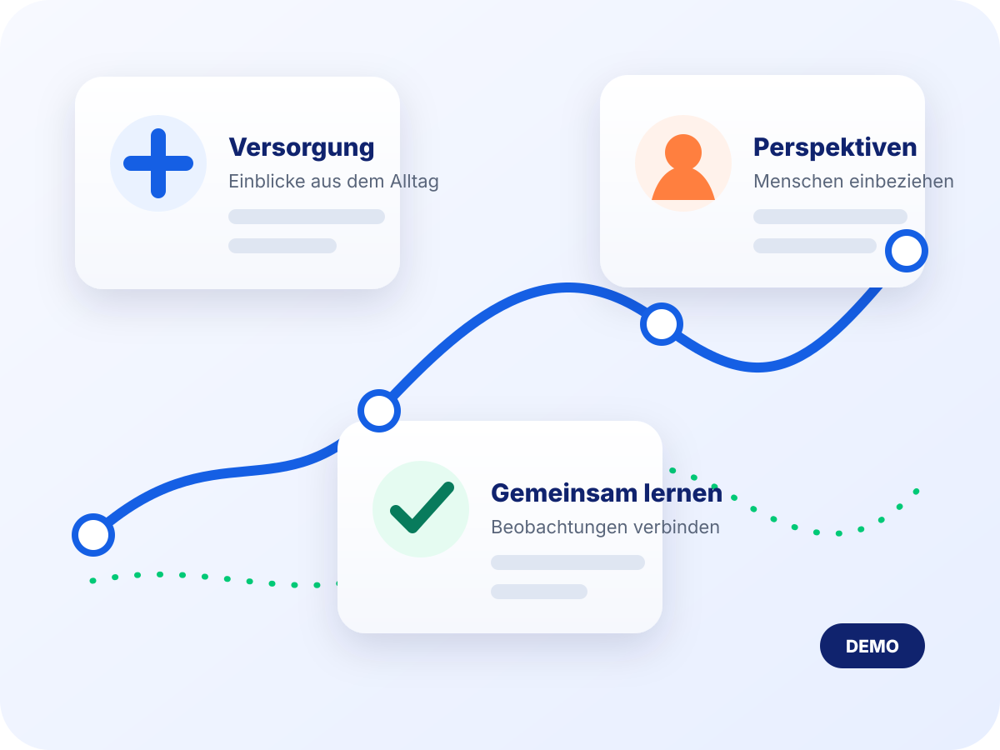

01
Versorgungsrealität einbeziehen
Erfahrungen aus Praxis, Apotheke, Pflege, Krankenhaus und weiteren Bereichen könnten früher in Fragestellungen und Lösungen einfließen.
Demo · eigenständige Interaktionsidee
Diese Demo zeigt eine eigenständige Idee dafür, wie Perspektiven aus dem Versorgungsalltag digital zusammengeführt werden könnten. Die tatsächliche Anmeldung und verbindliche Informationen liegen auf der gematik-Website.

Mögliche Konzeptidee
Ein später freigegebenes Versorgungs-Netzwerk könnte Menschen aus dem Gesundheitswesen mit Teams zusammenbringen, die digitale Lösungen entwickeln. Die konkrete Ausgestaltung wäre Teil eines separaten gematik-Prozesses.
Erfahrungen aus Praxis, Apotheke, Pflege, Krankenhaus und weiteren Bereichen könnten früher in Fragestellungen und Lösungen einfließen.
Ein freiwilliges Profil könnte helfen, Anfragen für Befragungen, Interviews, Tests oder Workshops gezielter auszuwählen.
In einem realen Angebot würden eingeladene Personen bei jedem Format und Zeitpunkt selbst über ihre Teilnahme entscheiden.
Möglicher Ablauf
Die folgenden Schritte sind ein UX-Konzept, keine Beschreibung des aktuellen gematik-Registrierungsprozesses.
Ein späterer Prozess könnte mit wenigen, klar begründeten Pflichtangaben beginnen.
Rolle, Einrichtung, Primärsystem und Interessen könnten freiwillig ergänzt oder vollständig übersprungen werden.
Nach separater Freigabe könnten passende Beteiligungsformate angeboten werden; eine Teilnahme bliebe freiwillig.
Formular-Konzept
Dieses Formular simuliert nur die Bedienung. Eingaben werden weder an die gematik noch an einen anderen Dienst übermittelt oder im Browser gespeichert.
Demo-Pflichtfelder sind mit * gekennzeichnet.
Es wurden keine Daten an die gematik oder einen anderen Dienst übermittelt oder gespeichert. Alle Formulareingaben wurden verworfen.
Freigabe vor Realbetrieb
Ein reales Angebot benötigt freigegebene Zwecke, Texte, Einwilligungen, Aufbewahrungsregeln und sichere Übertragungswege. Verbindliche Informationen finden Sie ausschließlich auf der gematik-Website.
Häufige Fragen
Nein. Diese Seite ist eine eigenständige Demoidee. Das reale Formular und verbindliche Hinweise finden Sie beim Versorgungs-Netzwerk auf gematik.de.
Die Profilfelder veranschaulichen ausschließlich eine mögliche UX-Idee für gezieltere spätere Anfragen. Sie sind kein freigegebener Feld- oder Datenverarbeitungsvertrag.
Nein. Die Konzeptdemo übermittelt nichts und verwirft alle Eingaben beim Abschluss oder Neuladen.
Als Beispiele werden Befragungen, Interviews, Workshops, Produkttests, Roundtables und freiwillige Praxiseinblicke genannt.
Ausschließlich im jeweils realen, von der gematik bereitgestellten Prozess. Die aktuellen Hinweise finden Sie auf der gematik-Website.